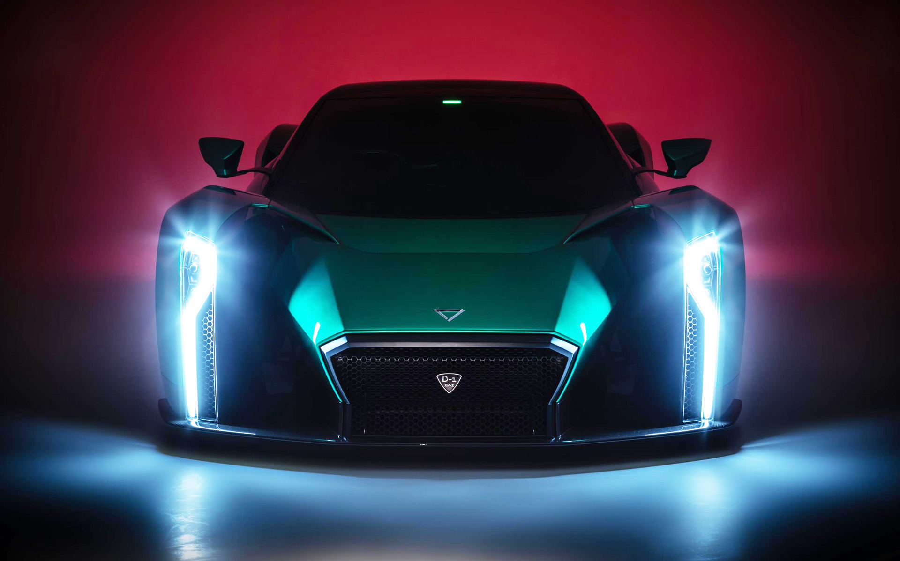
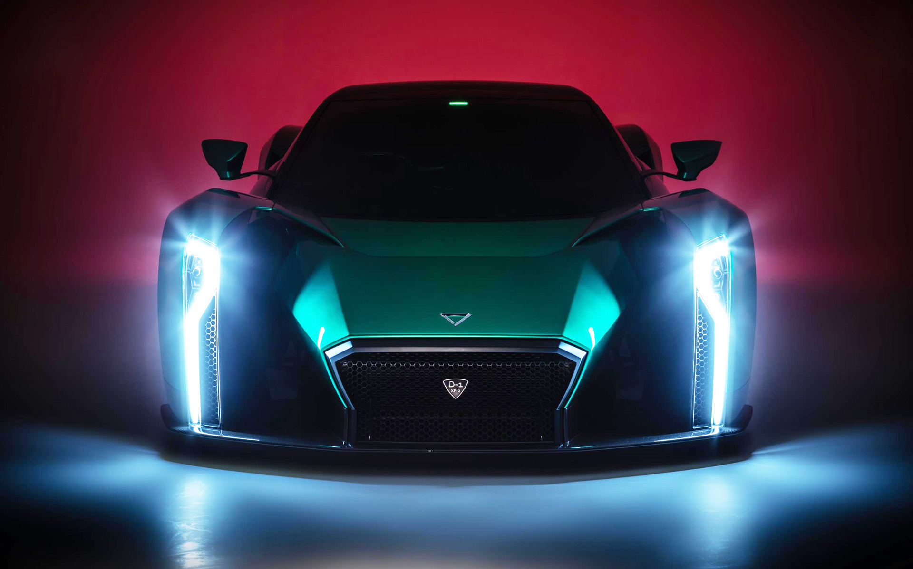
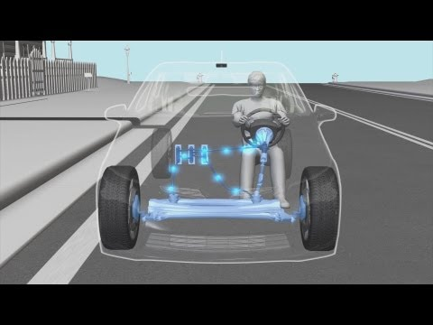
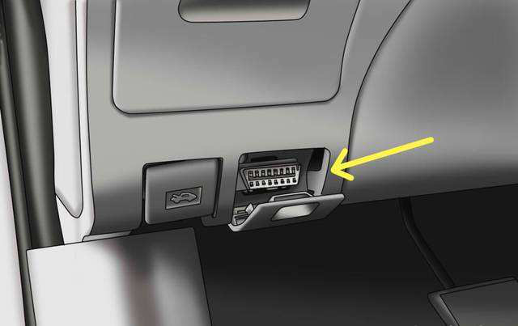

The existence of road automobiles can be regarded as a complex evolving ideology rather than a simple invention. They have been evolving drastically over the years from a simple road wagon to super cars that exist today. Let us now try to compare a few aspects of road vehicles that have been improved over the years. During the initial years, cars were built to be self powered steam vehicles. These vehicles used steam engines which are also known as external combustion engines. It was only in 1859 where a commercial internal combustion engine was successfully designed by Étienne Lenoir. The automobile industry then had a drastic change over in the regard of usage of internal combustion engines. In the modern era, the automobile industry has made dominant advancements some of which include the development of four stroke, two stroke and Wankel engines. Electric vehicles have also been a major part of the evolution of road automobiles. As a matter of fact, electric vehicles have existed for over a 100 years.The first ever street electric car was engineered in 1883.The boom of electric cars in the industry today is mostly caused by several reasons, some of which include exhaustion and the cost of non-renewable resources such as gasoline used in most of the combustion cars. The recent advancements in the domain on electric vehicles include Hybrid electric vehicle, Battery electric vehicle (BEV), Plug-in hybrid electric vehicle (PHEV) and Extended-range electric vehicle (EREV).
 

Cars usually have made use of mechanical linkages to perform vehicular functions. Technologies such as x-by-wire, steer-by-wire and drive-by-wire introduced the implementation of "electro-mechanical" systems to perform the same vehicular functions. These technologies have several advantages that included decreased vehicle weight, safety and ergonomics improvements. A CAN bus(Controller area network bus) is a communication system that allows exchange of data between various electrical components. This technology has been implemented in cars to eshtablish communication between ECUs (Electronic control units). A modern car contains upto 70 ECUs and the CAN bus allows communication between them as well as receives feedback from various sensors. CAN-bus operating systems can be found commonly in vehicles that were manufactured from mid-2000s.
The development of electro-mechanical systems simplified the manner in which cars work to an extent. But it is definitely a task to dive into all the complex wired mechanisms every time a fault occurred. This gave rise to a comprehensive electronic system called the On-board Diagnostic. Over the years, the OBD has served as a system that detects exhaust emission related failures in vehicles that run on combustion engines. In the mid-90's a new sophisticated standard of OBD called the OBD-II was introduced. The OBD-II has been used in the modern days to diagnose vehicular problems. It can provide several parameter IDs (PIDs) that request data from the vehicle. These PIDs dominantly manufacturer-Dependant.
This project makes ample use of the OBD-II mechanism to tackle several issues faced by vehicles on roads. The features selected are mainly inspired by routine problems that are encountered by vehicle owners, the society and the government. 